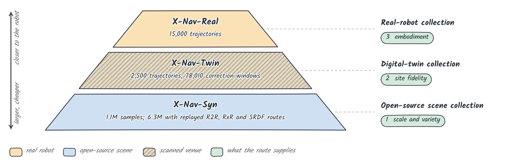
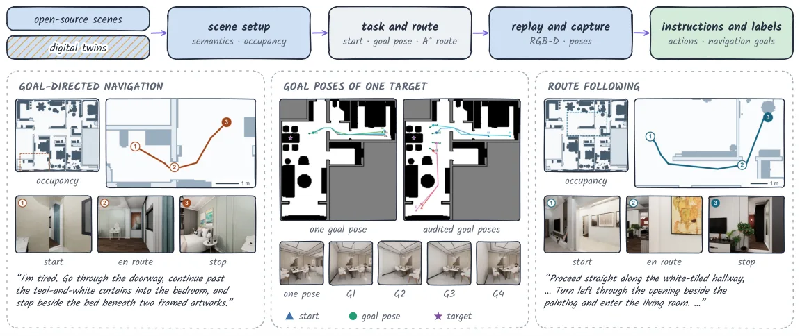
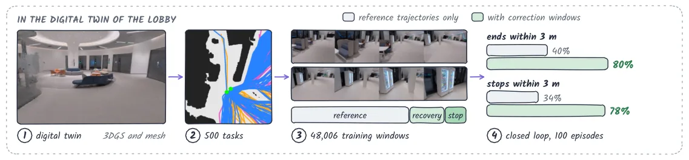
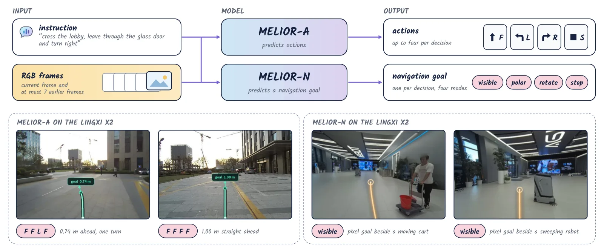
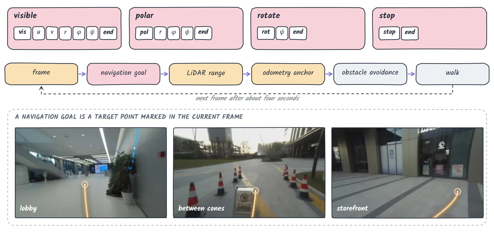
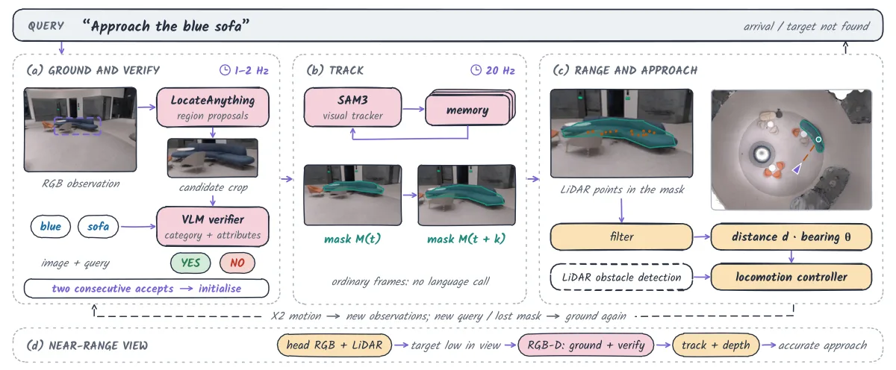

X-Nav 技术报告：人形机器人室内到室外的长程导航
X-Nav Technical Report: Real-World Long-Horizon Indoor-to-Outdoor Navigation on a Humanoid Robot
一句话：这不是又一个 VLN 模型，而是一份把“基准 episode（10–15 m 室内）”与“真实 mission（约 100 m 室内到室外）”之间的三处缺口（问题定义、数据来源、模型到行走机器人）逐条补齐的工程报告。最值得抄的是两个小模块：用里程计把“过时的像素目标”重新锚定的 goal adapter，以及用掩码内 LiDAR 点中值给出目标三维位置、再交给 P 控制接近的显式技能。
Real-robot mission length
Twin SR@3 m with corrections
R2R-CE success rate
作者、单位与技术谱系 · Research context
作者与单位
研究脉络
- NaVILA方法上游关系：腿足机器人上的中层语言动作范式被 MELIOR-A 的原始动作接口与实机部署方式继承，报告在相关工作里把它列为腿足/人形导航的直接前作。[技术报告 §4.2、§8]
- DAgger（Ross 等，2011）方法基座关系：第二阶段训练与现场适配的纠错窗口都建立在 DAgger 的“在策略自己访问到的状态上取专家纠正”之上。[技术报告 §4.4、§3.3.2]
- 本篇推进：数据引擎 + 双接口模型 + 部署工作流本篇推进关系：把“基准 episode”替换为“真实 mission”，并用三源数据（开源场景/站点孪生/真机）与两套技能（路线/目标）把模型一路送到会走路的机器人上。[技术报告 §1、§7]
合作网络
- AgiBot X-Lab ↔ MBZUAI/UESTC/UM/NTU/Melbourne/WuhanAgiBot X-Lab (Boson Lab) → MBZUAI、UESTC、University of Macau、NTU、University of Melbourne、Wuhan University关系：共同署名[技术报告首页单位表]
- X-Navarch ↔ NavGPT-3 运行时X-Navarch（本篇规划器） → NavGPT-3 公开运行时关系：技术依赖[技术报告 §6]
- X-Nav ↔ SAM3 / LocateAnything-3B / Qwen 系列MELIOR-X 与 MELIOR → SAM3、LocateAnything-3B、Qwen3-VL-8B/2B、Qwen3.5-4B关系：技术依赖[技术报告 §5、§7]
单位与角色来自报告首页的编号表与脚注（* 共同一作、† 项目负责人、通讯作者），未推断导师或实验室隶属；三条网络边分别是共同署名与两处明确写在正文里的模型/运行时依赖。
方法本质拆解 · What actually changed
是不是微调？
两阶段训练：先在 R2R、RxR、SRDF、X-Nav-Syn 与视频/空间问答数据上做监督微调，再用仿真里的 DAgger 纠错样本二次微调；MELIOR-A 从 Qwen3-VL-8B 初始化（约 4,450 H20 GPU 小时），MELIOR-N 从 Qwen3.5-4B 初始化（约 3,115 GPU 小时）。现场适配时主模型冻结，只训 LoRA（rank 64），两种适配器分别用 32,404 个纯参考轨迹窗口与 48,006 个含 9,601 个恢复窗口、6,001 个停止边界窗口的全量窗口。
有没有额外约束？
输入契约是单一前视 RGB（640×480、79° 水平视场）加最多 7 帧历史，动作空间固定为 0.25 m 前进与 15° 转向，MELIOR-N 的数值以量化 token 输出并带模式 token 与结束 token。几何约束主要体现在执行侧：goal adapter 用 LiDAR 沿像素射线取距离把目标落到里程计系；MELIOR-X 用掩码 + 深度分位窗口 + 至少两点做中值；避障层在目标位姿与运动控制器之间用测距规划局部路径。参考轨迹还带 clearance 偏好，使 MELIOR-N 的像素目标落在可行走地面上。
推理/后端到底做了什么？
学生推理不做优化：每次决策最多 4 个原始动作或 1 个导航目标，执行后取新帧再决策（约 4 秒一帧）；规划器只在子任务边界被调用，技能内部不调用规划器，因此机器人按当前技能速率运动。离线推理跑在离板 GPU 上，经网络交换帧与目标。MELIOR-X 是显式的“语义确认—掩码传播—几何测距—P 控制”闭环，靠近目标时把视角从头部 RGB 切到俯视 RGB-D，且同一时刻只有一路相机持有跟踪状态。
方法本质是什么？
本质是把任务分层：长程语义交给学到的策略（隐式路线表示），最后几米的度量精度交给显式几何（掩码 + LiDAR + 比例控制），中间用 goal adapter 把“过时的目标”锚回当前位姿。它没有做的是：没有建图、没有 SLAM、没有用地图先验，也没有把避障学进策略——避障是独立的测距层。因此它证明的是“这套分层足以让双足机器人走完一百米”，而不是“端到端模型可以替代几何模块”。
输入单目前视 RGB + 语言指令，改变的是“长程语义与最后几米度量精度的分工方式”，动作是把路线交给 MELIOR 的隐式策略、把目标接近交给掩码+LiDAR 的显式技能并用里程计重锚目标，直接效果是同一套模型在孪生与真机上完成约 100 m 跨室内外任务。

桥接价值Bridge
桥接价值
它把“评测分布”与“部署分布”的差距拆成三条可检查的假设：episode 只有 10–15 m 且场景是静态扫描、相机固定在模拟高度、每步严格按指令执行；而 mission 要跨 100 m、出楼后墙体变成几十米外的开阔地、相机随步态晃动、执行误差会累积、还有行人车辆穿行。这套拆法对我们评估自己的建图/定位链路同样适用——很多指标失效并不是算法变差，而是被测的分布变了。第二个桥接点是它的目标接近模块：语义定位（开放词表定位器 + VLM 校验）与几何测距（掩码内 LiDAR 点）显式分工，这正是“学习给语义、几何给度量”的一种落地形态。
方法与模块Method
方法摘要
MELIOR 是自回归视觉-语言模型，输入指令 I、当前前视 RGB 帧 o_t 与最多 7 帧采样历史 H_t，输出二选一：MELIOR-A 输出 ≤4 个原始动作（前进 0.25 m、左右转 15°、停止），MELIOR-N 输出一个导航目标，取四种模式之一（<visible> 像素目标 + 距离/方位/到达朝向、<polar> 视外目标、<rotate> 原地转、<stop>）。训练两阶段：先在 R2R/RxR/SRDF/X-Nav-Syn 与 LLaVA-Video/VSI-590K 上做 SFT，再在仿真里跑 DAgger 收集专家纠错样本做二次微调。MELIOR-X 负责最后几米的具名目标接近：LocateAnything-3B 出候选框、Qwen3-VL-2B 做属性校验（σ(ℓ_YES−ℓ_NO)≥0.5 且丢弃占图 >60% 的候选）、SAM3 传播掩码、把掩码内 LiDAR 点投到基座系取逐坐标中值得到目标位置，再用带死区的 P 控制接近，靠近时切到俯视 RGB-D。X-Navarch 的规划器（基于 NavGPT-3 运行时）按子任务调度这两个技能，goal adapter 与避障层夹在目标位姿与运动控制器之间。
可迁移模块
第一个是延迟补偿的 goal adapter：目标是在采集时刻 t0 的帧上预测的，等它到达时机器人已经走了，于是把目标固定在里程计系、发布时再换回基座系 g(t1)=T_t1^{-1} T_t0 g(t0)，推理与网络延迟因此不会让目标漂移。第二个是掩码条件下的稳健测距：LiDAR 点按标定投影到图像，取掩码内且在收缩包围框内的点，用相机轴深度的分位窗口选前景子集，再对基座系坐标取中值（至少 2 点），这比单点或均值更抗遮挡与边缘混入。第三个是“三源数据 + 纠错窗口”的现场适配：扫描建数字孪生、在孪生里采参考轨迹与纠错窗口，冻结主模型只训 LoRA（rank 64），再用闭环成功率而不是基准分数决定是否上机。

证据Evidence
关键证据与数字
真机 mission：MELIOR-A 走完 96.6 m、用时 3 分 24 秒（室内 34.2 m + 室外 62.4 m），中途 9.1 m 处接收新目的地并掉头，63.7–65.5 m 间为一辆汽车与行人让行 24 秒，85.9 m 看到店招、96.6 m 停在入口。数字孪生闭环（100 个 episode，同一大厅与同一目标）：加纠错窗口后 SR@3 m 从 40% 升到 80%，STOP-SR@3 m 从 34% 到 78%，导航误差 9.63 m→3.36 m，持续碰撞的 episode 从 52 降到 3；但 SR@1 m 反而 28%→20%、SR@0.5 m 13%→3%，说明“停到附近”改善而“精确停到位”没解决。基准（val-unseen）：MELIOR-N 在 R2R-CE 上 NE 3.34 m、OSR 73.6%、SR 70.5%、SPL 65.1%，是该组（单前视 RGB）里 SR/SPL 最高；RxR-CE 上 SR 60.9%、NE 4.80 m，弱于同组最强的 73.6%。
边界与下一步Limits & Next Step
边界与风险
作者明确承认：所有 mission 只覆盖一条路线、一个楼层，楼梯、电梯、需要开门的场景不在系统内，现场适配只在一个地点评估。还有两处需要我们自己核验：一是孪生适配的训练与评测用的是同一个场景、同一个目标（作者称这度量的是“对该站点的适配”而非泛化），因此 40%→80% 不能外推为新站点表现；二是“无站点先验”不等于“无传感器先验”——MELIOR 只用 RGB，但目标接近、goal adapter 的测距与底层控制都依赖 LiDAR 与里程计，且有离板 GPU 通过网络返回结果。指标侧的风险是任务成功率仍低于使用全景输入或带地图工具规划器的方法（如 NavGPT-3 的 81.5%），所以这更像“部署可行性证明”而非“精度上限”。
下一步实验
第一，把 goal adapter 的延迟补偿搬进我们自己的 VO/VIO 回路做量化实验：人为注入 200–800 ms 推理延迟，比较“目标固定在采集帧”与“经里程计重锚”两种做法的目标漂移与重规划次数，这个对照很便宜但结论清楚。第二，把“掩码内 LiDAR 中值”与“只用深度图或单点”的目标定位精度做 A/B，特别在部分遮挡与目标贴地两种条件下。第三，按它的三段归因自建 mission 级评测集：选一条 50–100 m、跨室内外的路线，固定起点与指令，分别记录出楼前后与遇到动态障碍时的成功率，用来判断我们现有链路最先在哪一段失效。







